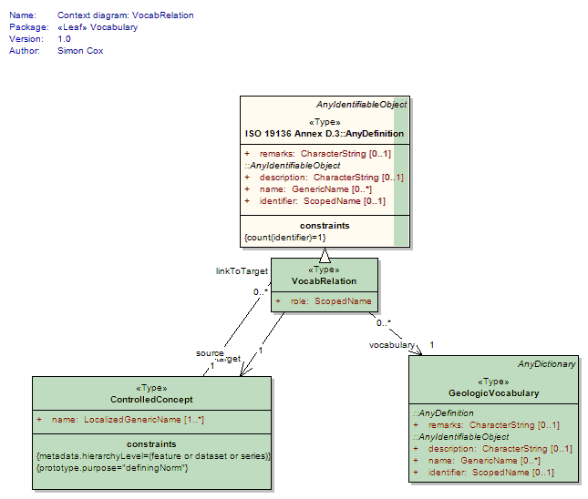
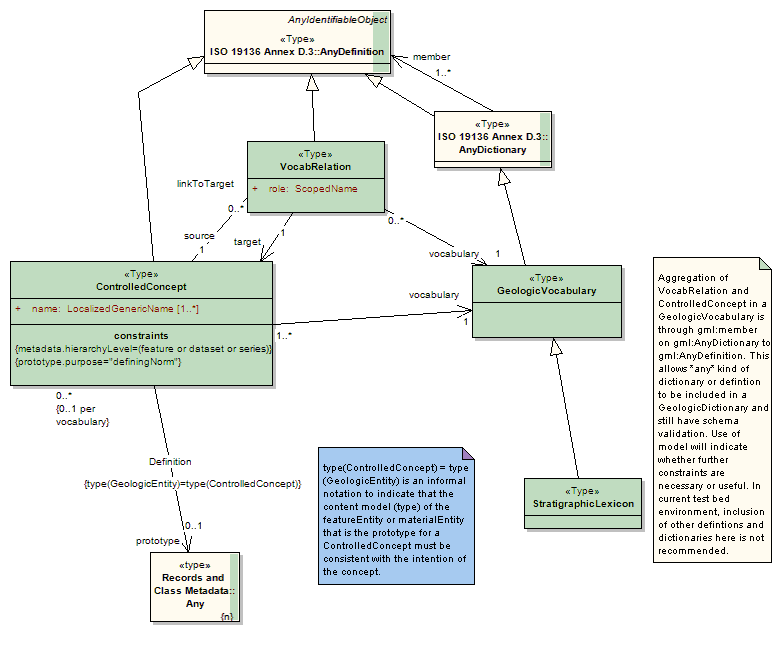
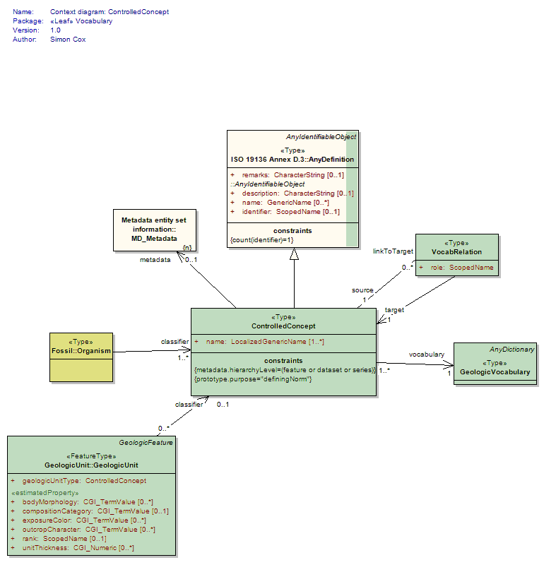

Package GeoSciML/Vocabulary
The GeoSciML Vocabulary package contains classes to support definitions and classifications.
This package is viewed as interim until suitable ontology models and systems are identified.
Class Summary |
|
| <<Type>> Classes | |
ControlledConcept
<<Type>>
|
Element to represent a defined concept. A concept in the context of a GeologicVocabulary. A relationship class representing inclusion of an instance of a concept in a GeologicVocabulary. The GeologicConcept instance must have an associated definition (prototype 0..1), which may be text for human interpretation, or a formal description in the form of a GeologicEntity instance. * items in the classification framework * every GeologicUnit may be classified as being representative of a Controlled Concept. This may be a formal stratigraphic unit from a stratigraphic lexicon, or some generic mappable concept like 'alluvial fan deposit' or 'basaltic rock'. * a Controlled Concept instance mayt be associated with one special feature or object, which is the prototype or normative description meant to specify what the concept represents. |
GeologicVocabulary
<<Type>>
|
A collection of terms (ControlledConcepts) and their associated definitions and relationships between the terms, usually organized in some logical fashion such as in a hierarchy (geologic time, rocks, unconsolidated deposits...). An instance of a GeologicConcept may occur only once in a particular GeologicVocabulary. In GeoSciML this is normally identified using a URN in the "classifierScheme" branch of the CGI URN scheme, with the @codesSpace attribute set to "urn:ieft:rfc:2141". |
StratigraphicLexicon
<<Type>>
|
Geologic vocabulary that is a collection of ControlledConcepts that have (or could have...) GeologicFeature.GeologicUnit prototoype instances. |
VocabRelation
<<Type>>
|
Relationships between ControlledConcepts. Use to implement thesaurus type relationships like 'broader than', 'narrower than', 'related term', 'synonym' etc. role attribute specifies relationship from source to target, read 'source' 'role' 'target'. VocabRelation and some other components may be replaced by another mechanism (OWL, SKOS, RDF, etc) at some future date, according to maturity and adoption level of standard technologies |
Tagged Values |
||
| Tag | Value | Notes |
| xsdDocument | vocabulary.xsd | Description: Relative path to XML Schema document corresponding to this package. |
UML Diagram: Context diagram: VocabRelation

UML Diagram: Summary diagram: Concepts and vocabularies

UML Diagram: Context diagram: ControlledConcept
